Токио · Хибия · бар
FOLKLORE в Хибии: коктейли на сакэ и сётю, которые рассказывают о японской земле
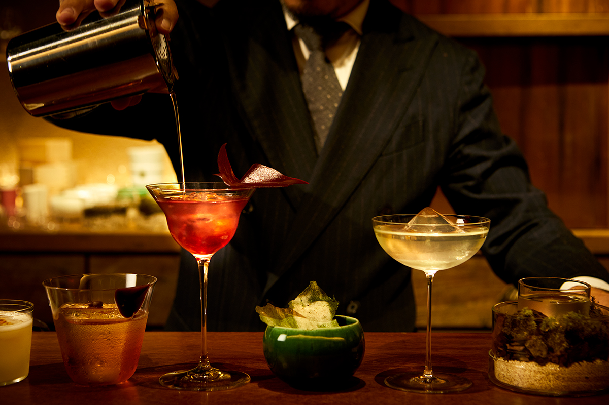
Через низкий вход, как в чайный домик, гость попадает в тихий бар в японском стиле. Здесь из японского сакэ и сётю делают коктейли, в которых чувствуется море, клубника из Нары и японский сад.
Бар
Чайный домик в Хибии
Бар нужен не только для того, чтобы выпить. Здесь можно попробовать напиток, о котором раньше не слышал, а в разговоре с барменом узнать, откуда он взялся и как его делают. Японские напитки, которые в стране называют «кокусю», то есть сакэ, сётю и крепкие напитки японского производства, за последние годы стали гораздо разнообразнее, и FOLKLORE это один из баров, где эти перемены хорошо видны.
Бар находится в торговом пространстве Hibiya OKUROJI. Название значит «фольклор», народное предание, и это не случайно: бар открывает для традиционных японских напитков новую дверь, и делает это с помощью новаторской миксологии.
Вход низкий, как «нидзиригути», лаз в чайный домик, и пройти в него можно только пригнувшись. За ним оказывается спокойный зал в стиле сукия, лёгкой японской архитектуры чайных павильонов, и шум центра Токио остаётся снаружи.
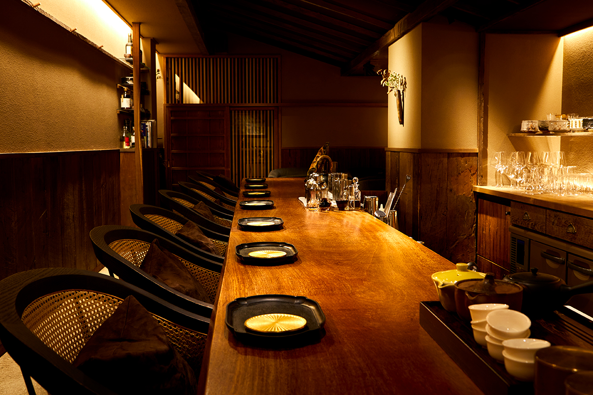
Коктейль на сакэ «Уми», то есть «Море», удивляет с первого глотка. Его подают в керамической чаше, и стоит поднести её к губам, как появляется запах морского берега. Во рту раскрывается мягкий рисовый вкус, а чистый финиш сухого сакэ «Бансю Иккон» приятно продлевает послевкусие домашней водки, настоянной на водорослях нори. Получается картина японского моря, собранная в одном глотке.
Хозяин
Миксолог, который не любил сётю
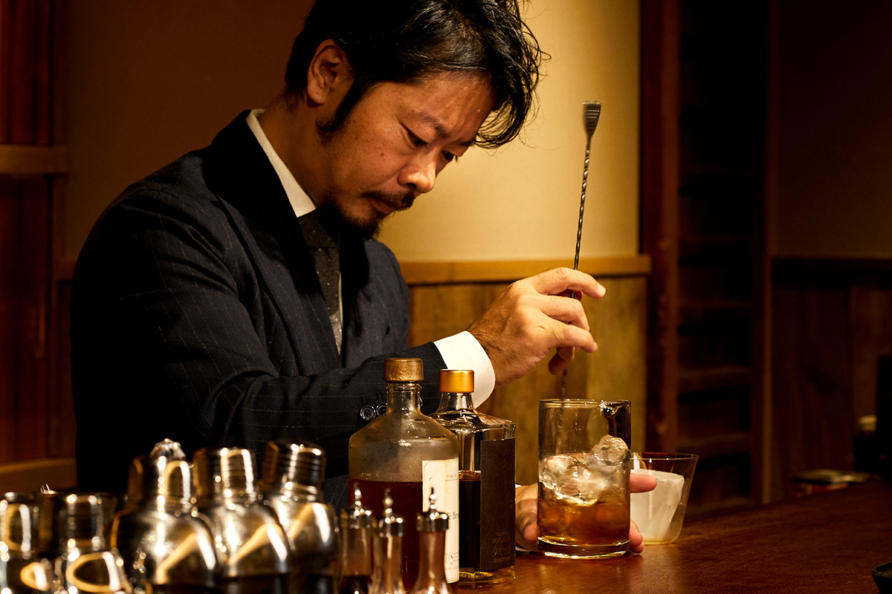
Миксология это способ делать коктейли, когда напиток соединяют с травами, специями и другими продуктами при помощи современных техник. За последние годы она охватила бары всего мира. Владелец FOLKLORE Сюдзо Нагумо занимался ею ещё тогда, когда в Японии этого слова почти не знали, и сегодня считается ведущим миксологом страны. До FOLKLORE он открывал бары, посвящённые чаю, какао и травам, и делал коктейли, которые ломали привычные представления о напитках. Кроме своих семи баров его компания консультирует другие заведения, торгует напитками и придумывает меню.
В FOLKLORE главная тема другая: сакэ, сётю и японские крепкие напитки.
«Было время, когда я говорил, что сётю единственный напиток, который я не люблю»
Сюдзо Нагумо, владелец бара
Японскими напитками он всерьёз заинтересовался в 2018 году. Вместе с магазином напитков IMADEYA GINZA он устроил вечер сётю и познакомился с теми, кто его делает. Потом были поездки по винокурням и сакэварням разных префектур, знакомство с их техникой и взглядами, и он увлёкся тем, чего, по его словам, нет в европейских напитках.
«Бродящую массу для сакэ в Японии готовят с точностью, которой, без преувеличения, нет равных в мире, а сложное брожение дарит множество вкусов. Чем больше я узнавал о сакэ и сётю, тем сильнее увлекался»
Сюдзо Нагумо
Сакэ и сётю, продолжает он, росли вместе с климатом и бытом каждой местности. Поэтому, думая о том, каким должен быть коктейль именно японский, он пришёл к напитку, который рассказывает о терруаре, то есть о земле и культуре, откуда он родом.
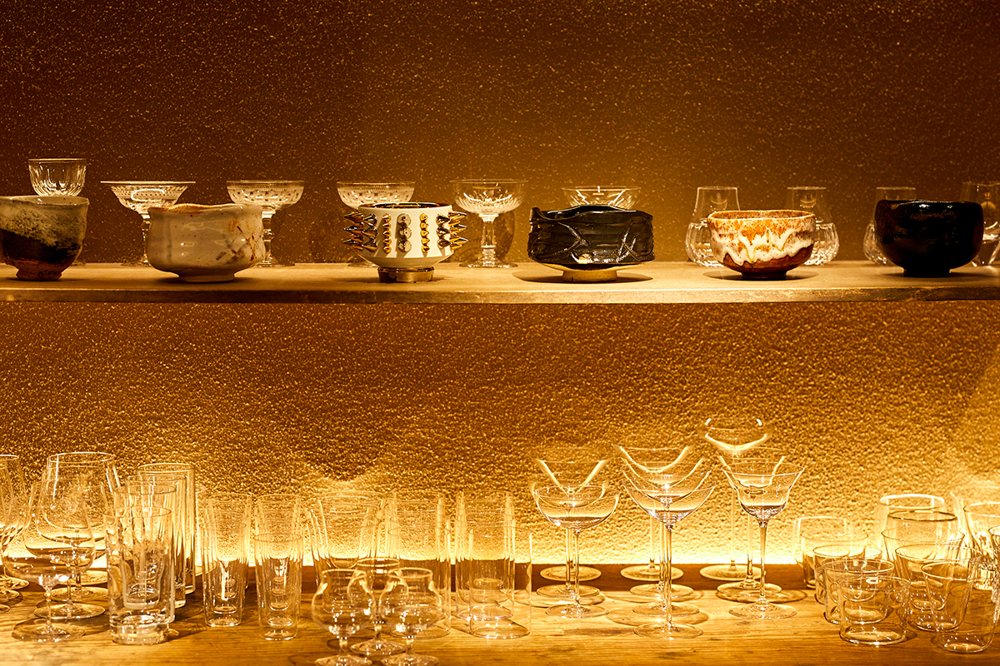
Коктейли
Сакэ вместо вермута, сётю вместо рома
В меню FOLKLORE фирменные коктейли на сакэ и сётю, классические коктейли мира в собственной переработке, коктейли из кофе и сакэ. Нагумо придумывает их точно и продуманно, но гостям советует пить без лишней серьёзности.
«Самое главное, чтобы даже тому, кто почти не пробовал сакэ и сётю, было интересно и вкусно. Пусть потом человек заинтересуется напитком, который его тронул, поедет туда, где его делают, и станет поклонником этой сакэварни. Мне хочется, чтобы из этого рождался туризм»
Сюдзо Нагумо
Хороший пример это «Итиго-но мори», «Клубничный лес». В нём сакэ «Кадзэ-но мори» с одной из сакэварен Нары, джин KIKKA GIN с винокурни Ямато из той же префектуры, сделанный с клубникой сорта «Асука руби», и сушёная клубника из Нары. К ним добавляют портвейн. Сначала чувствуется свежий аромат сакэ, потом клубника, и вкус ягоды раскрывается слоями, так что после бокала хочется узнать больше о напитках и продуктах Нары.
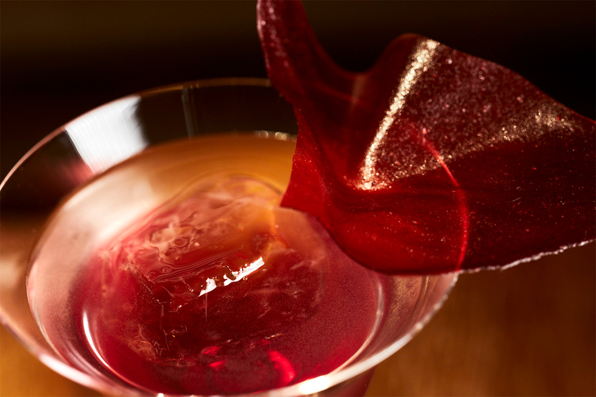
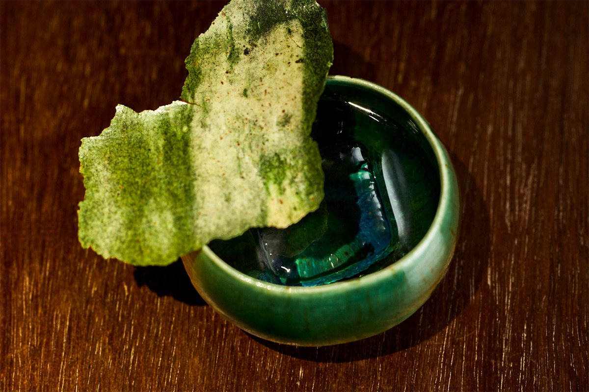
Сётю
На сётю в FOLKLORE тоже делают фирменные коктейли. «Кафе Бруно» собран на ячменном сётю «Тотикуригэ» из префектуры Миядзаки, выдержанном в бочках из японского дуба мидзунара. К его поджаренным нотам добавляют насыщенный херес, кофейный ликёр, белый шоколад, ваниль и кокосовое молоко, и коктейль становится похож на десерт.
В «Смоки бонито» встречаются торфяной дым виски «Лафройг 10» и густой аромат кунжутного сётю «Бэниотомэ Голд» из префектуры Фукуока. Вместе они дают вкус, похожий на бульон даси, а порошок из сушёного мисо и хлопьев тунца кацуобуси добавляет лёгкий запах.
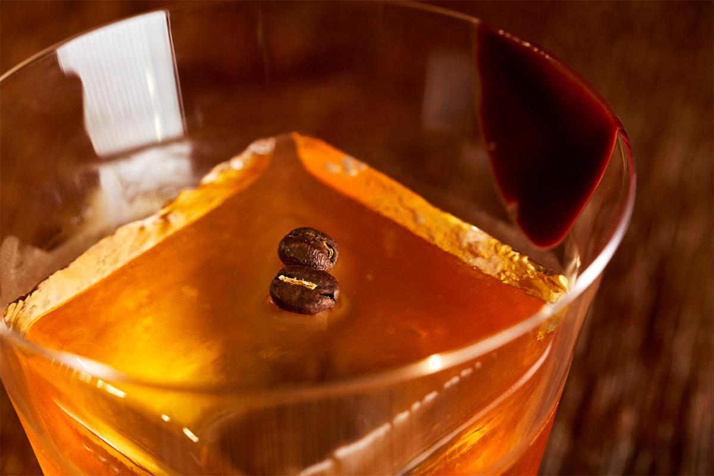
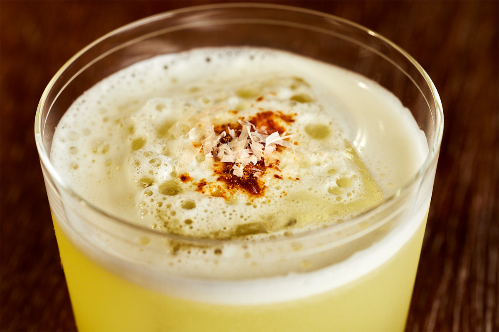
«Карэсансуй» назван в честь японского сухого сада из камней и песка, и подают его как маленький сад. Водку, настоянную на чае гёкуро из Удзи под Киото, смешивают с бататовым сётю «Ямато-дзакура Хикари» из префектуры Кагосима: у обоих сильный вкус умами. Сладость сётю и фруктовый аромат вина «Лилле блан» придают коктейлю глубину.
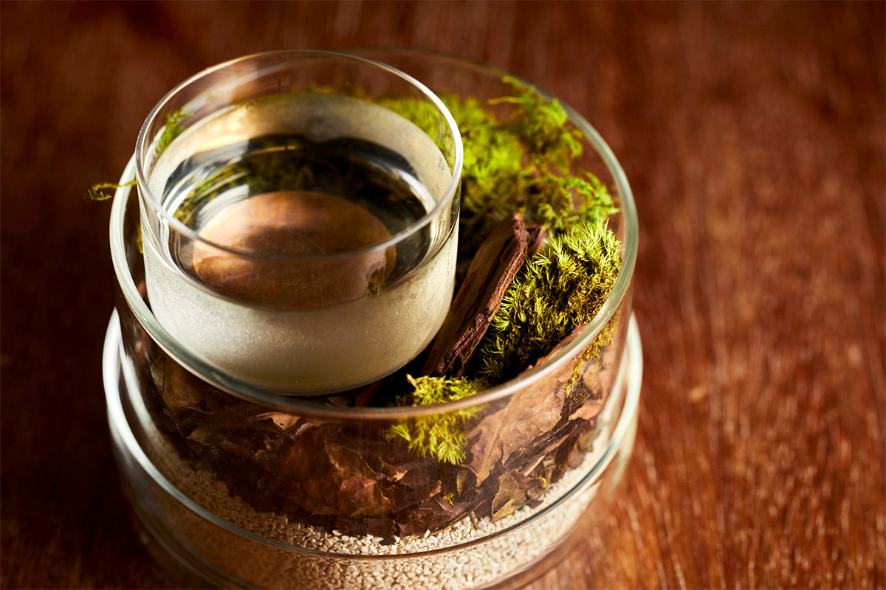
Классика на сакэ
Третья часть меню это знаменитые коктейли, переделанные на японский лад. «Го эхед Аляска» повторяет коктейль на джине с травяным ликёром, но здесь его собирают из двух сакэ. Сладость сакэ «Мимуросуги» из Нары соединяется с ликёром «Шартрёз» и джином ohoro GIN с Хоккайдо, а резкая кислота сакэ «Дзюммай Афусу нама» из префектуры Тиба собирает всё вместе. По этому коктейлю видно, сколько всего умеет сакэ.
Маргарита обычно делается на текиле с лаймом. В «Тэндэр маргарите» лайма в напитке нет: кислоту и остроту даёт сакэ, поэтому вкус получается мягким. Сверху кладут пену из помело и цедру лайма для свежего аромата.
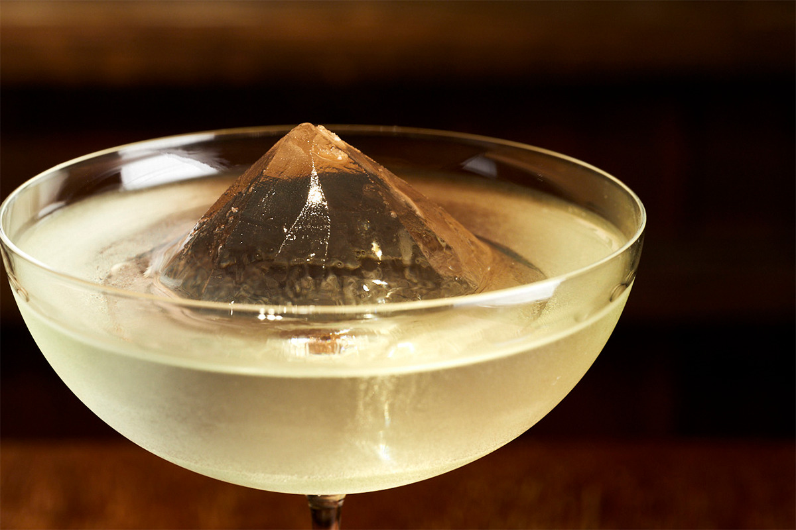
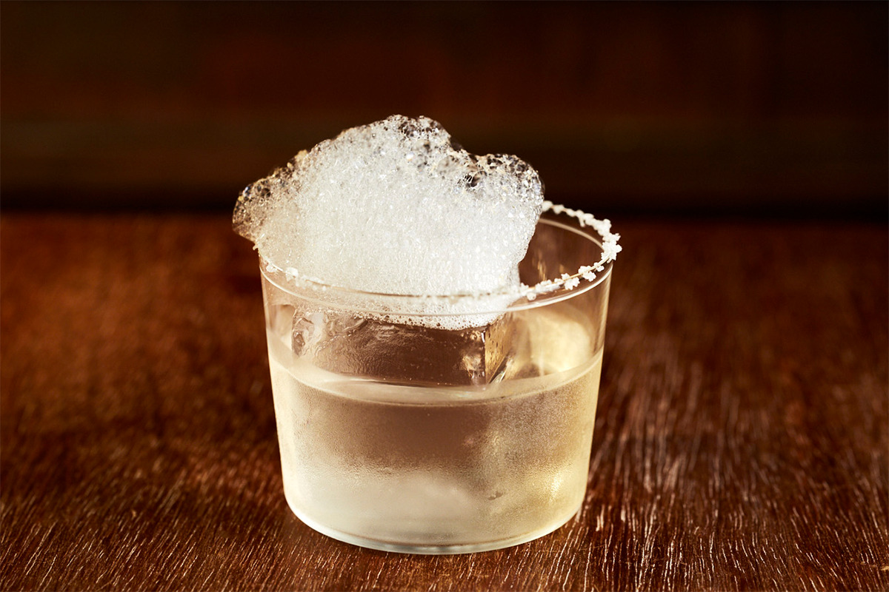
Веспер, тот самый коктейль Джеймса Бонда, смешивают из джина, водки и вермута. В «Японском веспере» джин и водка японские, а вместо вермута льют сакэ кидзёсю «Кокурю» из префектуры Фукуи: оно даёт лёгкий вкус умами, который идёт от аминокислот.
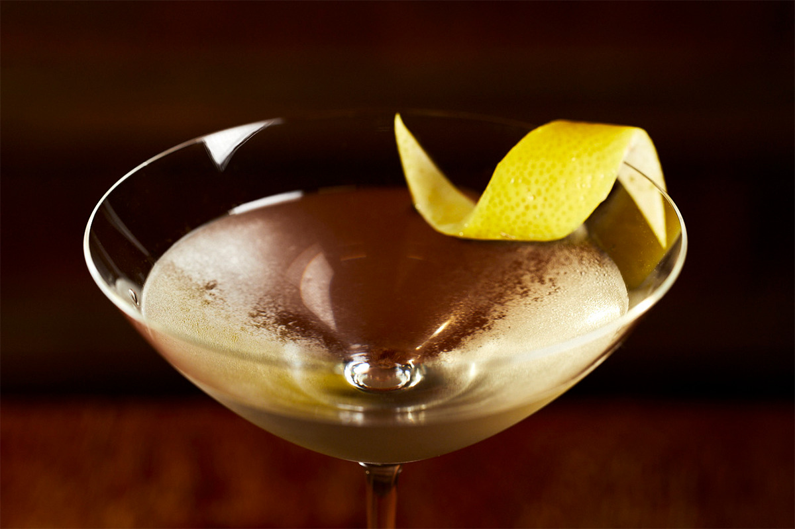
Этот бар открыт и новичкам, и тем, кто хорошо знает японские напитки. Состав меню и сакэ меняются в зависимости от сезона.
FOLKLORE
- Адрес
- Токио, район Тиёда, Утисайвайтё, 1-7-1, Hibiya OKUROJI, G27
- Телефон
- +81 3-6770-8785
- Часы работы
- 14:00–23:00 (последний заказ в 22:30)
- Выходные
- второй понедельник месяца
- Цены / Вход
- плата за место 800 иен, коктейли от 1540 иен
Фото: Кэндзи Окадзаки.